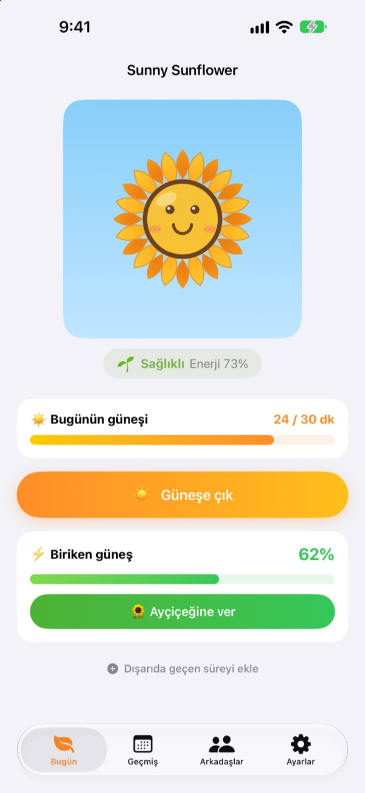
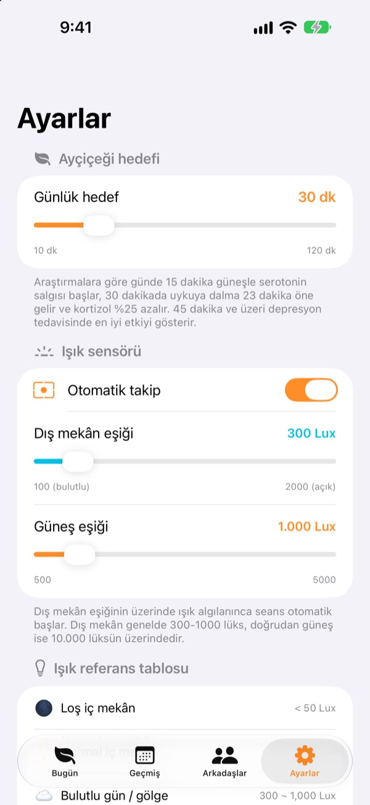
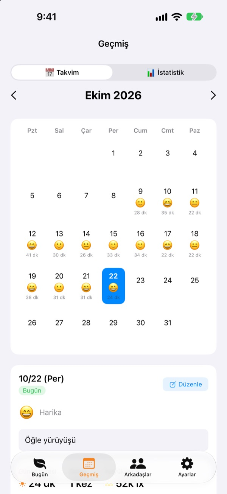
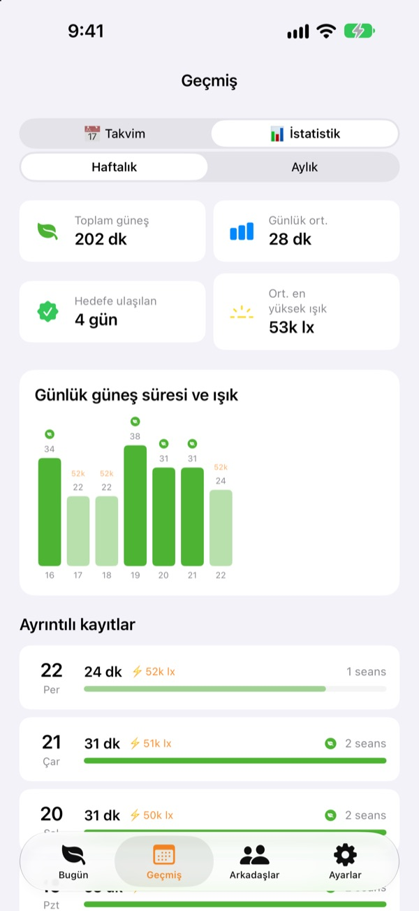

Bugünün güneşi
ayçiçeğini büyütür
Dışarı çıkman yeter, güneşte geçen süre kendiliğinden birikir. Topladığın güneşi ayçiçeğine verirsen capcanlı olur. Birkaç gün unutursan solmaya başlar.
Tüm özellikler ücretsiz. Kayıtlar yalnızca cihazında kalır.

Biraz güneş topla
Ne kadar aydınlık olduğunu ve ne kadar süreceğini seç, güneşlen, sonra boynunu bükmeye başlamış ayçiçeğine ver.
Bugün kaç dakika güneş gördün?
İşe giderken birkaç adım, öğle yemeği için kısa bir çıkış. Bütün gün içeride kalınca, gün ışığını neredeyse hiç görmediğini ancak akşam fark edersin. Sunny Sunflower dışarıda geçen süreni rakamlarla gösterir, ayçiçeğin de yarınki yürüyüşü bekler.
Dışarı çık, kendisi ölçsün
Güneşe çık düğmesine dokun ve dışarı çık. Uygulama ön kameranın pozlama bilgisinden çevredeki aydınlığı tahmin eder. Işık yaklaşık 30 saniye dış mekân seviyesinde kalınca kayıt başlar. Hiçbir zaman fotoğraf çekmez veya kaydetmez.
Sonrasında sensör pil tasarrufu için 2 dakikada bir yalnızca 20 saniye açılır.

Her gün güneş ve ruh hâli
Takvimde her günün güneşte geçen süresi, bir ruh hâli emojisi ve kısa bir notu olur. Dışarıdaydın ama ölçmedin mi? Dışarıda geçen süreyi ekle ile 5 ila 120 dakika ekleyebilirsin.

Haftan ve ayın tek bakışta
Haftalık ve aylık istatistikler hedefe ulaştığın günleri ve ortalama güneş süreni gösterir. Günlük hedefi 10 ila 120 dakika arasında belirle, bugün kaç dakika kaldığını ana ekranda hemen gör.
Ana ekran ve kilit ekranı widget'ları ile Dynamic Island da bugünkü güneşi ve ayçiçeğinin durumunu gösterir.

Üç adımda başla
- 1
Günlük hedefini belirle
Başlangıçta 30 dakikadır. Ayarlar'dan 10 ile 120 arasında seçebilirsin.
- 2
Güneşe çık
Güneşe çıkdüğmesine dokun ve uygulama açıkken dışarı çık. Kamera izni yalnızca bir kez sorulur. - 3
Ayçiçeğini besle
Topladığın güneşi enerjiye çevirmek için
Ayçiçeğine verdüğmesine dokun.
Işık nasıl güneşe dönüşür
- 300 lüksün altı
- Zayıf ışık: güneş süresi sayılmaz
- 300–1.000 lüks
- Dışarısı/bulutlu: 10 dakikada %1–3
- 1.000–10.000 lüks
- Güneş: 10 dakikada %3–33
- 10.000 lüks ve üstü
- Güçlü güneş: 10 dakikada %33'ten fazla
- Biriken güneş
- dakika × ortalama lüks ÷ 3.000 (her seferde en fazla %100)
- Ayçiçeğinin enerjisi
- saatte %2,5, günde yaklaşık %60 azalır
Dış mekân eşiğini Ayarlar'dan 100 ile 2.000 lüks arasında değiştirebilirsin. Varsayılan 300 lükstür.
Sık sorulan sorular
Güneş nasıl ölçülüyor?
Uygulama ön kameranın pozlama bilgisinden çevredeki aydınlığı (aydınlanma şiddetini) tahmin eder. Işık bir süre dış mekân seviyesinde kalınca kayıt kendiliğinden başlar. Fotoğraf çekilmez veya kaydedilmez.
Ölçüm çok pil yer mi?
Güneş doğrulandıktan sonra sensör sürekli açık kalmaz. Yeniden ölçmek için 2 dakikada bir yaklaşık 20 saniye uyanır, gerisini basit bir zamanlayıcı halleder.
Ayçiçeğim sürekli soluyor.
Ayçiçeği her saat enerjisinin %2,5'ini kaybeder. Güneş topla ve Ayçiçeğine ver düğmesine dokun. Açık bir günde doğrudan güneşte 15–20 dakika, bütün günün kaybını karşılamaya yeter.
Dışarıdaydım ama hiçbir şey kaydedilmedi.
Ana ekranın altındaki Dışarıda geçen süreyi ekle ile 5 ila 120 dakika ekleyebilirsin. Bulutlu günlerde kayıt zor başlıyorsa Ayarlar'dan dış mekân eşiğini düşür.
Arkadaş özelliği nasıl çalışıyor?
Sen ve bir arkadaşın birbirinize yakınken (yaklaşık 10 metre içinde) ve ikiniz de güneşi ölçüyorken otomatik olarak bağlanırsınız. Yeni biriyle önce birlikte güneşlenmeyi onaylamanız gerekir, sonrası otomatiktir. Taç yapraklar rengârenk olur ve 3 gün içinde kendi rengine döner, birlikte geçirdiğiniz süre Arkadaşlar sekmesine kaydedilir. İkinizde de uygulama yüklü olmalı, Bluetooth ve yerel ağ izni verilmelidir.
Gerçekten ücretsiz mi?
Evet. Reklam yok, satın alma yok, tüm özellikler dahil. Beğenirsen uygulama içinden bahşiş bırakabilirsin ama bahşiş fazladan bir şey açmaz.
Kayıtlarımı yedekleyebilir ya da taşıyabilir miyim?
Her şey sunucu olmadan cihazında kalır ve son 90 gün saklanır. Ayrı bir dışa aktarma yoktur, ancak kayıtların iCloud'daki ya da bilgisayardaki normal iPhone yedeğine dahildir.
Tüm verilerimi nasıl silerim?
Uygulamanın ayarlarında Verileri sıfırla düğmesine dokun ya da uygulamayı sil. Bu işlem geri alınamaz.
Bir hatayı nereye bildiririm?
Aşağıdaki adrese e-posta gönder ya da GitHub'da bir issue aç (github.com/M1zz/SunlightTracker/issues). Cihaz modeli, iOS sürümü ve ne olduğu çok yardımcı olur. Genellikle birkaç gün içinde yanıtlıyoruz.
Soruların ya da önerilerin mi var? leeo@kakao.com adresine yaz.